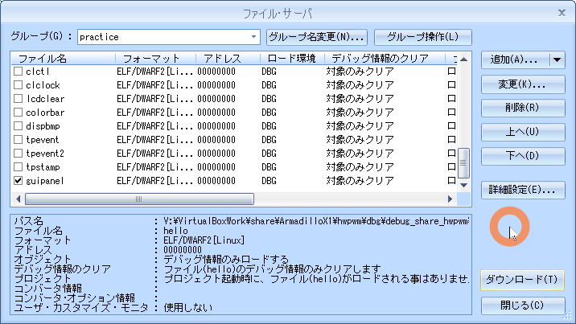

10.GUI
目的
組込みアプリケーション開発 10.GUI
構成データ
/media/sf_ArmadilloX1/hwpwm/work/R06_2024/Apllication_debug/text/practice ディレクトリ
･･･/share/ArmadilloX1/hwpwm/work/R06_2024/Application_debug/text/practice/ の構成
user@1204PC-Z490M:/mnt/v/VirtualBoxWork/share/ArmadilloX1/hwpwm/work/R06_2024/Application_debug/text/practice$ tree -aF -L 3
./
├── 10.gui/
│ ├── drivers/
│ │ ├── leds/
│ │ └── motor/
│ ├── guipanel.c* <───── 課題 デバイス制御用ソース
│ ├── image.bmp* <───── 課題用ビットマップファイル
│ └── Makefile* <───── デバイス制御用Makefile
GUI
仕様
操作部 から 制御対象デバイスを制御し、その状態を表示するGUIアプリケーション
| 名称 | 機器 | 説明 |
|---|---|---|
| 操作部 | タッチパネル | 制御対象を操作 |
| 表示部 | LCD | 制御対象の状態を表示 |
| 制御対象 | LED | 照明8箇所 |
| Motor | 換気扇 |
操作部と表示部のレイアウト

照明コントロール機能の仕様
- 初期状態はLED全消灯
- 照明1～8のいずれかのボタンがタッチされたら、LEDの点灯・消灯を切り替え
- LED消灯中は灰色の照明ボタン、点灯中は緑色の照明ボタンを表示
換気扇コントロール機能の仕様
- 初期状態はモータ停止、速度の初期値は50
- 現在のモータ速度を左矢印ボタンと右矢印ボタンの間に表示
- モータ停止時に換気扇ボタンがタッチされたら、表示されている速度でモータを回転
- モータ動作中に換気扇ボタンがタッチされたらモータを停止。表示速度は変更しない
- 左矢印ボタンがタッチされたらモータ速度表示を10減。下限0
- 右矢印ボタンがタッチされたらモータ速度表示を10増。上限100
- モータ速度変更時、モータ動作中であれば直ちにモータの速度を変更
- モータ停止中は水色の換気扇ボタン、モータ動作中はオレンジの換気扇ボタンを表示
画像データ(image.bmp)

プログラムでは、image.bmp画像データを 切り出して使用する
識別子
| 画像 | 識別子 | 用途 |
|---|---|---|
  |
BTN_LIGHT1 | 照明1ON･OFFボタン |
| BTN_LIGHT2 | 照明1ON･OFFボタン | |
| BTN_LIGHT3 | 照明1ON･OFFボタン | |
| BTN_LIGHT4 | 照明1ON･OFFボタン | |
| BTN_LIGHT5 | 照明1ON･OFFボタン | |
| BTN_LIGHT6 | 照明1ON･OFFボタン | |
| BTN_LIGHT7 | 照明1ON･OFFボタン | |
| BTN_LIGHT8 | 照明1ON･OFFボタン | |
  |
BTN_FAN | 換気扇ON･OFFボタン |
 |
BTN_ARROW_L | 回転速度減少ボタン |
 |
BTN_ARROW_R | 回転速度増加ボタン |
 |
なし | モータ速度表示用数字 |
| (0～9, 空白) |
識別子
// 各種ボタンに対応した識別子設定
enum {
IMAGE_LIGHT1_OFF = 0, IMAGE_LIGHT1_ON,
IMAGE_LIGHT2_OFF, IMAGE_LIGHT2_ON,
IMAGE_LIGHT3_OFF, IMAGE_LIGHT3_ON,
IMAGE_LIGHT4_OFF, IMAGE_LIGHT4_ON,
IMAGE_LIGHT5_OFF, IMAGE_LIGHT5_ON,
IMAGE_LIGHT6_OFF, IMAGE_LIGHT6_ON,
IMAGE_LIGHT7_OFF, IMAGE_LIGHT7_ON,
IMAGE_LIGHT8_OFF, IMAGE_LIGHT8_ON,
IMAGE_FAN_OFF, IMAGE_FAN_ON,
IMAGE_ARROW_L, IMAGE_ARROW_R,
IMAGE_0, IMAGE_1, IMAGE_2, IMAGE_3, IMAGE_4,
IMAGE_5, IMAGE_6, IMAGE_7, IMAGE_8, IMAGE_9,
IMAGE_WHITE,
NIMAGES
};
enum {
BTN_LIGHT1 = 0,
BTN_LIGHT2,
BTN_LIGHT3,
BTN_LIGHT4,
BTN_LIGHT5,
BTN_LIGHT6,
BTN_LIGHT7,
BTN_LIGHT8,
BTN_FAN,
BTN_ARROW_L,
BTN_ARROW_R,
NBTNS
};
#define BTN_OFF 0
#define BTN_ON 1
struct imageinfo_t {
int x, y; /* position on the image file */
int w, h; /* width and height */
unsigned int *data; /* data (RGB888) */
} image[NIMAGES] = {
{ 160, 0, 160, 160 }, /* IMAGE_LIGHT1_OFF */
{ 0, 0, 160, 160 }, /* IMAGE_LIGHT1_ON */
{ 480, 0, 160, 160 }, /* IMAGE_LIGHT2_OFF */
{ 320, 0, 160, 160 }, /* IMAGE_LIGHT2_ON */
{ 0, 160, 160, 160 }, /* IMAGE_LIGHT3_OFF */
{ 160, 160, 160, 160 }, /* IMAGE_LIGHT3_ON */
{ 320, 160, 160, 160 }, /* IMAGE_LIGHT4_OFF */
{ 480, 160, 160, 160 }, /* IMAGE_LIGHT4_ON */
{ 160, 320, 160, 160 }, /* IMAGE_LIGHT5_OFF */
{ 0, 320, 160, 160 }, /* IMAGE_LIGHT5_ON */
{ 480, 320, 160, 160 }, /* IMAGE_LIGHT6_OFF */
{ 320, 320, 160, 160 }, /* IMAGE_LIGHT6_ON */
{ 0, 480, 160, 160 }, /* IMAGE_LIGHT7_OFF */
{ 160, 480, 160, 160 }, /* IMAGE_LIGHT7_ON */
{ 320, 480, 160, 160 }, /* IMAGE_LIGHT8_OFF */
{ 480, 480, 160, 160 }, /* IMAGE_LIGHT8_ON */
{ 0, 640, 160, 160 }, /* IMAGE_FAN_OFF */
{ 160, 640, 160, 160 }, /* IMAGE_FAN_ON */
{ 320, 640, 120, 160 }, /* IMAGE_ARROW_L */
{ 440, 640, 120, 160 }, /* IMAGE_ARROW_R */
{ 0, 800, 80, 160 }, /* IMAGE_0 */
{ 80, 800, 80, 160 }, /* IMAGE_1 */
{ 160, 800, 80, 160 }, /* IMAGE_2 */
{ 240, 800, 80, 160 }, /* IMAGE_3 */
{ 320, 800, 80, 160 }, /* IMAGE_4 */
{ 400, 800, 80, 160 }, /* IMAGE_5 */
{ 480, 800, 80, 160 }, /* IMAGE_6 */
{ 560, 800, 80, 160 }, /* IMAGE_7 */
{ 0, 960, 80, 160 }, /* IMAGE_8 */
{ 80, 960, 80, 160 }, /* IMAGE_9 */
{ 160, 960, 80, 160 }, /* IMAGE_WHITE */
};
struct btninfo_t {
int x, y; /* position on the screen */
int w, h; /* width and height */
int off, on; /* OFF image and ON image */
} btn[NBTNS] = {
{ 80, 160, 160, 160, IMAGE_LIGHT1_OFF, IMAGE_LIGHT1_ON }, /* BTN_LIGHT1 */
{ 240, 160, 160, 160, IMAGE_LIGHT2_OFF, IMAGE_LIGHT2_ON }, /* BTN_LIGHT2 */
{ 400, 160, 160, 160, IMAGE_LIGHT3_OFF, IMAGE_LIGHT3_ON }, /* BTN_LIGHT3 */
{ 560, 160, 160, 160, IMAGE_LIGHT4_OFF, IMAGE_LIGHT4_ON }, /* BTN_LIGHT4 */
{ 80, 320, 160, 160, IMAGE_LIGHT5_OFF, IMAGE_LIGHT5_ON }, /* BTN_LIGHT5 */
{ 240, 320, 160, 160, IMAGE_LIGHT6_OFF, IMAGE_LIGHT6_ON }, /* BTN_LIGHT6 */
{ 400, 320, 160, 160, IMAGE_LIGHT7_OFF, IMAGE_LIGHT7_ON }, /* BTN_LIGHT7 */
{ 560, 320, 160, 160, IMAGE_LIGHT8_OFF, IMAGE_LIGHT8_ON }, /* BTN_LIGHT8 */
{ 560, 0, 160, 160, IMAGE_FAN_OFF , IMAGE_FAN_ON }, /* BTN_FAN */
{ 80, 0, 120, 160, IMAGE_ARROW_L , IMAGE_ARROW_L }, /* BTN_ARROW_L */
{ 440, 0, 120, 160, IMAGE_ARROW_R , IMAGE_ARROW_R }, /* BTN_ARROW_R */
};
10.gui/guipanel.c load_bmp()
// ビットマップ形式の画像ファイルを読み込み、
// ボタンのカラーデータを取得する関数。
int load_bmp(void)
{
int fd;
unsigned char *bmpdata, *bmp_offset;
int datasize;
int x, y;
struct bmpheader_t bmp;
unsigned char r, g, b;
int padding;
int i, c;
// 画像ファイルをオープンします。
// オープンに失敗した場合はエラーで終了します。
if ((fd = open(IMAGE_FILE, O_RDONLY)) < 0) {
perror("open(file)");
return 1;
}
// 画像ファイルを読み込みます。
// 読み込みに失敗した場合はエラーで終了します。
if (read(fd, &bmp, sizeof(bmp)) != sizeof(bmp)){
perror("read(file)");
return 2;
}
// 取得した画像データより、
// 識別子、1ピクセルあたりのビット数、圧縮タイプ、画像の高さをチェックします。
if (bmp.fh.bfType != 0x4d42 || bmp.ih.biBitCount != 24
|| bmp.ih.biCompression != 0 || bmp.ih.biHeight < 0){
fprintf(stderr, "unsupported bitmap format\n");
return 2;
}
// 画像データから、ビットマップファイルのヘッダ情報のデータサイズを引いた値を
// データサイズとして、メモリ領域を確保します。
datasize = bmp.fh.bfSize - sizeof(bmp);
// 必要なメモリ領域を確保できない場合はエラーで終了します。
if (!(bmpdata = malloc(datasize))){
perror("malloc");
return 1;
}
// 確保したメモリ領域に画像データを読み込みます。
// 読み込みに失敗した場合はエラーで終了します。
if (read(fd, bmpdata, datasize) != datasize){
perror("read(file)");
free(bmpdata);
return 1;
}
// 画像ファイルをクローズします。
close(fd);
// 1ラインのデータサイズが4の倍数にならない場合のパディングを設定します。
padding = (bmp.ih.biWidth * 3) % 4;
// 各ボタンのカラーデータを設定します。
// 画像データを元に、カラーデータを構造体imageに設定します。
for (i = 0; i < NIMAGES; i++){
// データの取得に必要な領域を確保します。
image[i].data = malloc(image[i].w * image[i].h * BYTES_PER_PIXCEL);
// 必要なメモリ領域を確保できない場合はエラーで終了します。
if (!image[i].data){
perror("malloc");
for (; i; --i)
free(image[i - 1].data);
free(bmpdata);
return 1;
}
c = 0;
// カラーデータをセットします。
for (y = 0; y < image[i].h; y++){
// 対応するボタンのデータ開始位置を取得します。
bmp_offset = &bmpdata[(bmp.ih.biHeight - image[i].y - y - 1) * (bmp.ih.biWidth * 3 + padding) + image[i].x * 3];
for (x = 0; x < image[i].w; x++){
// 1pixelから、R,G,B各色のカラーデータを取得します。
b = *bmp_offset++;
g = *bmp_offset++;
r = *bmp_offset++;
// カラーデータを格納します。
image[i].data[c++] = RGB888(r, g, b);
}
}
}
// 画像データを取得するために確保した領域を開放します。
free(bmpdata);
return 0;
}
表示用ライブラリ関数
update_button()
| void update_button(int index, int on) | |
|---|---|
| arg1 | ボタン識別子 |
| arg2 | BTN_ON : 動作中ボタンを表示 |
| BTN_OFF: 停止中ボタンを表示 | |
| 戻り値 | なし |
10.gui/guipanel.c update_button()
(省略)
// ボタンを表示する関数。
void update_button(int index, int on)
{
// 第2引数がONならONボタン、OFFならOFFボタンを表示します。
if (on)
// ONボタンを表示します。
draw_image(btn[index].on, btn[index].x, btn[index].y);
else
// OFFボタンを表示します。
draw_image(btn[index].off, btn[index].x, btn[index].y);
}
(省略)
update_number()
| void update_number(int num) | |
|---|---|
| arg1 | 表示する数値 |
| 戻り値 | なし |
10.gui/guipanel.c update_number()
(省略)
// モータ速度表示用の数字を表示する関数。
void update_number(int num)
{
int d100, d10, d1;
// 100の位を算出します。
d100 = num / 100;
// 10の位を算出します。
d10 = (num - d100 * 100) / 10;
// 1の位を算出します。
d1 = num - d100 * 100 - d10 * 10;
// 1の位を表示します。
draw_image(d1 + IMAGE_0, 360, 0);
// 9より大きい数字なら10の位を表示します。
if (num > 9)
draw_image(d10 + IMAGE_0, 280, 0);
else
draw_image(IMAGE_WHITE, 280, 0);
// 99より大きい数字なら100の位を表示します。
if (num > 99)
draw_image(d100 + IMAGE_0, 200, 0);
else
draw_image(IMAGE_WHITE, 200, 0);
}
(省略)
xy2button()
| void xy2button(int x, int y) | |
|---|---|
| arg1 | x座標 |
| arg2 | y座標 |
| 戻り値 | なし |
10.gui/guipanel.c xy2button()
(省略)
// 座標に対応するボタン識別子を返す関数。
int xy2button(int x, int y)
{
int i;
// 対応するボタン識別子を判定し、該当するものがある場合は
// 識別子を戻り値として返します。
for (i = 0; i < NBTNS; i++){
// タッチされた位置に対応するボタンを判定します。
if (x >= btn[i].x && x < btn[i].x + btn[i].w &&
y >= btn[i].y && y < btn[i].y + btn[i].h)
return i;
}
return -1;
}
(省略)
guipanel.c の Q1～Q13
10.gui/guipanel.c
#include <stdio.h>
#include <stdlib.h>
#include <fcntl.h>
#include <sys/mman.h>
#include <string.h>
#include <unistd.h>
#include <tslib.h>
#define SCREENWIDTH 800
#define SCREENHEIGHT 480
#define BYTES_PER_PIXCEL 4
#define SCREENSIZE (SCREENWIDTH * SCREENHEIGHT * BYTES_PER_PIXCEL)
#define RGB888(r, g, b) (((r) & 0xff) << 16 | \
((g) & 0xff) << 8 | \
((b) & 0xff))
// フレームバッファデバイスファイル
#define FBDEV_FILE "/dev/fb0"
// タッチスクリーンイベントファイル
#define TSDEV_FILE "/dev/input/event1"
// モータ制御ファイル
#define MOTOR_FILE "/sys/class/motor/motor0/motor_rotation"
// LED制御用ファイル
#define LED_FILE "/sys/class/leds/led_ext/brightness"
// 画像ファイル
#define IMAGE_FILE "image.bmp"
// 各種ボタンに対応した識別子設定
enum {
IMAGE_LIGHT1_OFF = 0, IMAGE_LIGHT1_ON,
IMAGE_LIGHT2_OFF, IMAGE_LIGHT2_ON,
IMAGE_LIGHT3_OFF, IMAGE_LIGHT3_ON,
IMAGE_LIGHT4_OFF, IMAGE_LIGHT4_ON,
IMAGE_LIGHT5_OFF, IMAGE_LIGHT5_ON,
IMAGE_LIGHT6_OFF, IMAGE_LIGHT6_ON,
IMAGE_LIGHT7_OFF, IMAGE_LIGHT7_ON,
IMAGE_LIGHT8_OFF, IMAGE_LIGHT8_ON,
IMAGE_FAN_OFF, IMAGE_FAN_ON,
IMAGE_ARROW_L, IMAGE_ARROW_R,
IMAGE_0, IMAGE_1, IMAGE_2, IMAGE_3, IMAGE_4,
IMAGE_5, IMAGE_6, IMAGE_7, IMAGE_8, IMAGE_9,
IMAGE_WHITE,
NIMAGES
};
enum {
BTN_LIGHT1 = 0,
BTN_LIGHT2,
BTN_LIGHT3,
BTN_LIGHT4,
BTN_LIGHT5,
BTN_LIGHT6,
BTN_LIGHT7,
BTN_LIGHT8,
BTN_FAN,
BTN_ARROW_L,
BTN_ARROW_R,
NBTNS
};
#define BTN_OFF 0
#define BTN_ON 1
struct imageinfo_t {
int x, y; /* position on the image file */
int w, h; /* width and height */
unsigned int *data; /* data (RGB888) */
} image[NIMAGES] = {
{ 160, 0, 160, 160 }, /* IMAGE_LIGHT1_OFF */
{ 0, 0, 160, 160 }, /* IMAGE_LIGHT1_ON */
{ 480, 0, 160, 160 }, /* IMAGE_LIGHT2_OFF */
{ 320, 0, 160, 160 }, /* IMAGE_LIGHT2_ON */
{ 0, 160, 160, 160 }, /* IMAGE_LIGHT3_OFF */
{ 160, 160, 160, 160 }, /* IMAGE_LIGHT3_ON */
{ 320, 160, 160, 160 }, /* IMAGE_LIGHT4_OFF */
{ 480, 160, 160, 160 }, /* IMAGE_LIGHT4_ON */
{ 160, 320, 160, 160 }, /* IMAGE_LIGHT5_OFF */
{ 0, 320, 160, 160 }, /* IMAGE_LIGHT5_ON */
{ 480, 320, 160, 160 }, /* IMAGE_LIGHT6_OFF */
{ 320, 320, 160, 160 }, /* IMAGE_LIGHT6_ON */
{ 0, 480, 160, 160 }, /* IMAGE_LIGHT7_OFF */
{ 160, 480, 160, 160 }, /* IMAGE_LIGHT7_ON */
{ 320, 480, 160, 160 }, /* IMAGE_LIGHT8_OFF */
{ 480, 480, 160, 160 }, /* IMAGE_LIGHT8_ON */
{ 0, 640, 160, 160 }, /* IMAGE_FAN_OFF */
{ 160, 640, 160, 160 }, /* IMAGE_FAN_ON */
{ 320, 640, 120, 160 }, /* IMAGE_ARROW_L */
{ 440, 640, 120, 160 }, /* IMAGE_ARROW_R */
{ 0, 800, 80, 160 }, /* IMAGE_0 */
{ 80, 800, 80, 160 }, /* IMAGE_1 */
{ 160, 800, 80, 160 }, /* IMAGE_2 */
{ 240, 800, 80, 160 }, /* IMAGE_3 */
{ 320, 800, 80, 160 }, /* IMAGE_4 */
{ 400, 800, 80, 160 }, /* IMAGE_5 */
{ 480, 800, 80, 160 }, /* IMAGE_6 */
{ 560, 800, 80, 160 }, /* IMAGE_7 */
{ 0, 960, 80, 160 }, /* IMAGE_8 */
{ 80, 960, 80, 160 }, /* IMAGE_9 */
{ 160, 960, 80, 160 }, /* IMAGE_WHITE */
};
struct btninfo_t {
int x, y; /* position on the screen */
int w, h; /* width and height */
int off, on; /* OFF image and ON image */
} btn[NBTNS] = {
{ 80, 160, 160, 160, IMAGE_LIGHT1_OFF, IMAGE_LIGHT1_ON }, /* BTN_LIGHT1 */
{ 240, 160, 160, 160, IMAGE_LIGHT2_OFF, IMAGE_LIGHT2_ON }, /* BTN_LIGHT2 */
{ 400, 160, 160, 160, IMAGE_LIGHT3_OFF, IMAGE_LIGHT3_ON }, /* BTN_LIGHT3 */
{ 560, 160, 160, 160, IMAGE_LIGHT4_OFF, IMAGE_LIGHT4_ON }, /* BTN_LIGHT4 */
{ 80, 320, 160, 160, IMAGE_LIGHT5_OFF, IMAGE_LIGHT5_ON }, /* BTN_LIGHT5 */
{ 240, 320, 160, 160, IMAGE_LIGHT6_OFF, IMAGE_LIGHT6_ON }, /* BTN_LIGHT6 */
{ 400, 320, 160, 160, IMAGE_LIGHT7_OFF, IMAGE_LIGHT7_ON }, /* BTN_LIGHT7 */
{ 560, 320, 160, 160, IMAGE_LIGHT8_OFF, IMAGE_LIGHT8_ON }, /* BTN_LIGHT8 */
{ 560, 0, 160, 160, IMAGE_FAN_OFF , IMAGE_FAN_ON }, /* BTN_FAN */
{ 80, 0, 120, 160, IMAGE_ARROW_L , IMAGE_ARROW_L }, /* BTN_ARROW_L */
{ 440, 0, 120, 160, IMAGE_ARROW_R , IMAGE_ARROW_R }, /* BTN_ARROW_R */
};
typedef struct tagBITMAPFILEHEADER{ // ビットマップファイルヘッダ
unsigned short bfType; // 識別子0x4d42(‘B’,‘M’)
unsigned long bfSize; // ファイルサイズ
unsigned short bfReserved1; // 使わない
unsigned short bfReserved2; // 使わない
unsigned long bfOffBits; // ファイル内の画像データ開始位置
} __attribute__((packed)) BITMAPFILEHEADER;
typedef struct tagBITMAPINFOHEADER{ // ビットマップ情報ヘッダ
unsigned long biSize; // 情報ヘッダサイズ
long biWidth; // 画像の幅
long biHeight; // 画像の高さ
unsigned short biPlanes; // プレーン数（1に固定）
unsigned short biBitCount; // 1ピクセルあたりのビット数
unsigned long biCompression; // 圧縮タイプ
unsigned long biSizeImage; // 画像データサイズ
long biXPixPerMeter; // 横1mあたりのピクセル数
long biYPixPerMeter; // 縦1mあたりのピクセル数
unsigned long biClrUsed; // パレット数
unsigned long biClrImporant; // 重要パレット数
} __attribute__((packed)) BITMAPINFOHEADER;
struct bmpheader_t {
BITMAPFILEHEADER fh;
BITMAPINFOHEADER ih;
};
#define MOTOR_OFF 0
#define MOTOR_ON 1
unsigned int *pfb;
int fd_mt;
int fd_led;
// ビットマップ形式の画像ファイルを読み込み、
// ボタンのカラーデータを取得する関数。
int load_bmp(void)
{
int fd;
unsigned char *bmpdata, *bmp_offset;
int datasize;
int x, y;
struct bmpheader_t bmp;
unsigned char r, g, b;
int padding;
int i, c;
// 画像ファイルをオープンします。
// オープンに失敗した場合はエラーで終了します。
if ((fd = open(IMAGE_FILE, O_RDONLY)) < 0) {
perror("open(file)");
return 1;
}
// 画像ファイルを読み込みます。
// 読み込みに失敗した場合はエラーで終了します。
if (read(fd, &bmp, sizeof(bmp)) != sizeof(bmp)){
perror("read(file)");
return 2;
}
// 取得した画像データより、
// 識別子、1ピクセルあたりのビット数、圧縮タイプ、画像の高さをチェックします。
if (bmp.fh.bfType != 0x4d42 || bmp.ih.biBitCount != 24
|| bmp.ih.biCompression != 0 || bmp.ih.biHeight < 0){
fprintf(stderr, "unsupported bitmap format\n");
return 2;
}
// 画像データから、ビットマップファイルのヘッダ情報のデータサイズを引いた値を
// データサイズとして、メモリ領域を確保します。
datasize = bmp.fh.bfSize - sizeof(bmp);
// 必要なメモリ領域を確保できない場合はエラーで終了します。
if (!(bmpdata = malloc(datasize))){
perror("malloc");
return 1;
}
// 確保したメモリ領域に画像データを読み込みます。
// 読み込みに失敗した場合はエラーで終了します。
if (read(fd, bmpdata, datasize) != datasize){
perror("read(file)");
free(bmpdata);
return 1;
}
// 画像ファイルをクローズします。
close(fd);
// 1ラインのデータサイズが4の倍数にならない場合のパディングを設定します。
padding = (bmp.ih.biWidth * 3) % 4;
// 各ボタンのカラーデータを設定します。
// 画像データを元に、カラーデータを構造体imageに設定します。
for (i = 0; i < NIMAGES; i++){
// データの取得に必要な領域を確保します。
image[i].data = malloc(image[i].w * image[i].h * BYTES_PER_PIXCEL);
// 必要なメモリ領域を確保できない場合はエラーで終了します。
if (!image[i].data){
perror("malloc");
for (; i; --i)
free(image[i - 1].data);
free(bmpdata);
return 1;
}
c = 0;
// カラーデータをセットします。
for (y = 0; y < image[i].h; y++){
// 対応するボタンのデータ開始位置を取得します。
bmp_offset = &bmpdata[(bmp.ih.biHeight - image[i].y - y - 1) * (bmp.ih.biWidth * 3 + padding) + image[i].x * 3];
for (x = 0; x < image[i].w; x++){
// 1pixelから、R,G,B各色のカラーデータを取得します。
b = *bmp_offset++;
g = *bmp_offset++;
r = *bmp_offset++;
// カラーデータを格納します。
image[i].data[c++] = RGB888(r, g, b);
}
}
}
// 画像データを取得するために確保した領域を開放します。
free(bmpdata);
return 0;
}
// LCDに画像を表示する関数。
void draw_image(int index, int x0, int y0)
{
int x, y;
unsigned int *p = image[index].data;
// 開始位置から画像を表示します。
// 最も上のラインから順番に、画像データを格納します。
for (y = 0; y < image[index].h; y++){
for (x = 0; x < image[index].w; x++){
// LCDにカラーデータを表示します。
pfb[(y0 + y) * SCREENWIDTH + (x0 + x)] = *p++;
}
}
}
// ボタンを表示する関数。
void update_button(int index, int on)
{
// 第2引数がONならONボタン、OFFならOFFボタンを表示します。
if (on)
// ONボタンを表示します。
draw_image(btn[index].on, btn[index].x, btn[index].y);
else
// OFFボタンを表示します。
draw_image(btn[index].off, btn[index].x, btn[index].y);
}
// モータ速度表示用の数字を表示する関数。
void update_number(int num)
{
int d100, d10, d1;
// 100の位を算出します。
d100 = num / 100;
// 10の位を算出します。
d10 = (num - d100 * 100) / 10;
// 1の位を算出します。
d1 = num - d100 * 100 - d10 * 10;
// 1の位を表示します。
draw_image(d1 + IMAGE_0, 360, 0);
// 9より大きい数字なら10の位を表示します。
if (num > 9)
draw_image(d10 + IMAGE_0, 280, 0);
else
draw_image(IMAGE_WHITE, 280, 0);
// 99より大きい数字なら100の位を表示します。
if (num > 99)
draw_image(d100 + IMAGE_0, 200, 0);
else
draw_image(IMAGE_WHITE, 200, 0);
}
// 座標に対応するボタン識別子を返す関数。
int xy2button(int x, int y)
{
int i;
// 対応するボタン識別子を判定し、該当するものがある場合は
// 識別子を戻り値として返します。
for (i = 0; i < NBTNS; i++){
// タッチされた位置に対応するボタンを判定します。
if (x >= btn[i].x && x < btn[i].x + btn[i].w &&
y >= btn[i].y && y < btn[i].y + btn[i].h)
return i;
}
return -1;
}
// 引数で渡された値に応じて
// モータの速度を変更する関数。
void change_motor(int rotation)
{
/*** Question 1 ***/
}
// 引数に渡された値に応じて
// 対応するLEDを点灯させます。
void change_led(int value)
{
/*** Question 2 ***/
}
int main(void) {
int fd;
int i;
int ret;
struct tsdev *ts;
struct ts_sample samp;
int enable = 1;
int led_state = 0;
int motor_state = MOTOR_OFF;
int motor_speed = 50;
int tmp;
/*** Question 3 ***/
/*** Question 4 ***/
/*** Question 5 ***/
/*** Question 6 ***/
// 画像データを読み込み、ボタンのカラーデータを取得します。
if (ret = load_bmp())
return ret;
/*** Question 7 ***/
// タッチスクリーンイベントを受け付ける間ループさせます。
for(;;){
/*** Question 8 ***/
// タッチイベントが1個以外の場合は無視します。
if (ret != 1)
continue;
// 圧力がなくなったら、次に圧力がかかった初回のみ処理を実行するように、
// enable に 1を設定します。
if (samp.pressure == 0){
enable = 1;
continue;
}
// タッチされたボタンに該当する処理を実行します。
if (enable){
/*** Question 9 ***/
// 識別子によって処理を変えます。
switch(ret){
// 照明1～8ボタンの処理。
case BTN_LIGHT1 ... BTN_LIGHT8:
/*** Question 10 ***/
break;
// 換気扇ボタンの処理。
case BTN_FAN:
/*** Question 11 ***/
break;
// 左矢印ボタンの処理。
case BTN_ARROW_L:
/*** Question 12 ***/
break;
// 右矢印ボタンの処理。
case BTN_ARROW_R:
/*** Question 13 ***/
break;
}
// 圧力がなくなるまで、同じ処理をしないように
// enableに0を設定します。
enable = 0;
}
}
// LED制御ファイルをクローズします。
close(fd_led);
// モータ制御ファイルをクローズします。
close(fd_mt);
// タッチスクリーンイベントファイルをクローズします。
ts_close(ts);
// フレームバッファのために確保した領域を開放します。
munmap(pfb, SCREENSIZE);
// フレームバッファをクローズします。
close(fd);
return 0;
}
| 項目 | 内容 |
|---|---|
| Q1 | 引数として渡されるrotationをモータデバイスに書込む |
| Q2 | 引数として渡されるvalueをLEDデバイスに書込む |
| Q3 | fb0の初期化 |
| Q4 | タッチパネルデバイスの初期化 |
| Q5 | モータデバイスの初期化 |
| Q6 | LEDデバイスの初期化 |
| Q7 | 各ボタンおよびモータ速度の設定値を表示 |
| Q8 | タッチパネルイベントの読出し、構造体sampに格納、戻り値はretに格納 |
| Q9 | タッチ位置の座標をボタン識別子に変換、結果は変数retに格納 |
| Q10 | 照明ボタンがタッチされたときの処理、現在のledの状態は、led_stateへ格納 |
| Q11 | 換気扇ボタンがタッチされたときの処理、現在のモータの回転状態はmotor_state に MOTOR_ON または MOTOR_OFFを格納 |
| Q12 | 左矢印ボタンがタッチされたときの処理 |
| Q13 | 右矢印ボタンがタッチされたときの処理 |
Makefile
10.gui/Makefile
CC = arm-linux-gnueabihf-gcc
TARGET = guipanel
CFLAGS = -I/work/linux/nfsroot/usr/local/include -gdwarf-2 -O0
LDFLAGS = -L/work/linux/nfsroot/usr/local/lib
LIBS = -lts
all: $(TARGET)
guipanel: guipanel.c
$(CC) -o $@ $^ $(CFLAGS) $(LDFLAGS) $(LIBS)
install :
cp -p $(TARGET) /work/linux/nfsroot/debug/04_practice
cp -p $(TARGET) /media/sf_ArmadilloX1/hwpwm/dbg/debug_share_hwpwm/R06_2024/04_practice
cp -p $(TARGET).c /media/sf_ArmadilloX1/hwpwm/dbg/debug_share_hwpwm/R06_2024/04_practice
cp -p ./*.bmp /work/linux/nfsroot/debug/04_practice
cp -p ./*.bmp /media/sf_ArmadilloX1/hwpwm/dbg/debug_share_hwpwm/R06_2024/04_practice
clean:
rm -f $(TARGET)
.PHONY: clean
動作確認
make clean
$ make clean
atmark@atde8:/media/sf_ArmadilloX1/hwpwm/work/R06_2024/Application_debug/text/practice-example/10.gui$ make clean
rm -f guipanel
make
$ make
atmark@atde8:/media/sf_ArmadilloX1/hwpwm/work/R06_2024/Application_debug/text/practice-example/10.gui$ make guipanel
arm-linux-gnueabihf-gcc -o guipanel guipanel.c -I/work/linux/nfsroot/usr/local/include -gdwarf-2 -O0 -L/work/linux/nfsroot/usr/local/lib -lts
sudo make install
$ sudo make install
atmark@atde8:/media/sf_ArmadilloX1/hwpwm/work/R06_2024/Application_debug/text/practice-example/10.gui$ sudo make install
[sudo] atmark のパスワード:
cp -p guipanel /work/linux/nfsroot/debug/04_practice
cp -p guipanel /media/sf_ArmadilloX1/hwpwm/dbg/debug_share_hwpwm/R06_2024/04_practice
cp -p guipanel.c /media/sf_ArmadilloX1/hwpwm/dbg/debug_share_hwpwm/R06_2024/04_practice
cp -p ./*.bmp /work/linux/nfsroot/debug/04_practice
cp -p ./*.bmp /media/sf_ArmadilloX1/hwpwm/dbg/debug_share_hwpwm/R06_2024/04_practice
CSIDEでロード
メニュー「ファイル」-「ロード」

insmod（既にinsmod 済みなら割愛）
# insmod leds.ko 他
root@armadillo:/lib/modules/4.9.133-at27/extra# insmod leds.ko
root@armadillo:/lib/modules/4.9.133-at27/extra# insmod motor_hwpwm.ko
root@armadillo:/lib/modules/4.9.133-at27/extra# lsmod
Module Size Used by
motor_hwpwm 4415 0
leds 2103 0
タッチパネルのキャリブレーション（既に終えているなら割愛）
キャリブレーションファイルの指定
ts_calibrate が反映しない場合、rm /etc/pointercal で削除した後、export TSLIB_CALIBFILE=/etc/pointercal で生成しておく
root@armadillo:~/tslib-1.22# export TSLIB_CALIBFILE=/etc/pointercal
root@armadillo:~/tslib-1.22# export TSLIB_CALIBFILE=/etc/pointercal
キャリブレーション
root@armadillo:/usr/lib# TSLIB_TSDEVICE=/dev/input/event1 ts_calibrate
root@armadillo:~# TSLIB_TSDEVICE=/dev/input/event1 ts_calibrate
xres = 800, yres = 480
Took 1 samples...
Top left : X = 483 Y = 991
Took 1 samples...
Top right : X = 9575 Y = 1020
Took 1 samples...
Bot right : X = 9516 Y = 9389
Took 1 samples...
Bot left : X = 525 Y = 9262
Took 1 samples...
Center : X = 4923 Y = 5140
12.199158 0.077410 0.000080
6.291077 -0.000394 0.045671
Calibration constants: 799484 5073 5 412292 -25 2993 65536
キャリブレーション結果の確認
root@armadillo:~/tslib-1.19# cat /etc/pointercal
root@armadillo:~# cat /etc/pointercal
5073 5 799484 -25 2993 412292 65536 800 480 0
実行結果
root@armadillo:/debug/04_practice# ./guipanel
root@armadillo:/debug/04_practice# ./guipanel